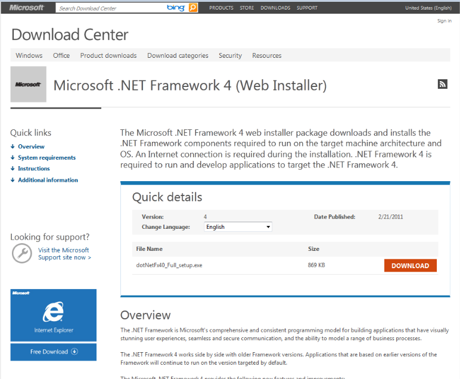
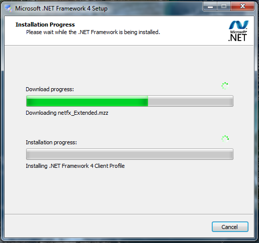
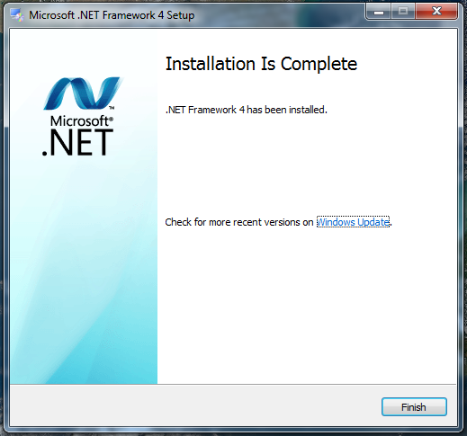

Installing .Net Framework 4.0
This .Net Framework 4.0 Install Guide will guide you through installation process.
Steps
Step 1: We need to download .Net Framework 4.0 from this download page.

Step 2: Next execute the download file. You will be prompted with the .Net Framework 4.0 License Agreement. Click the check box “I have read and accept the license terms.”, then click “Next”.
Step 3: The installer should begin downloading and installing .Net Framework 4.0.

Step 4: After a few minutes the download and install should be complete. You will be prompted with a window confirming that .Net Framework 4.0 has been installed. Click “Finish” to close the window.

Now .Net Framework 4.0 is installed.